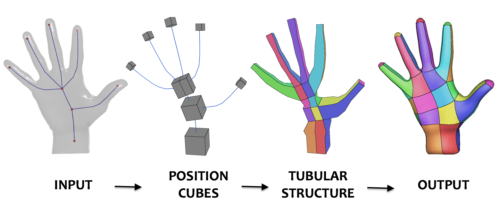
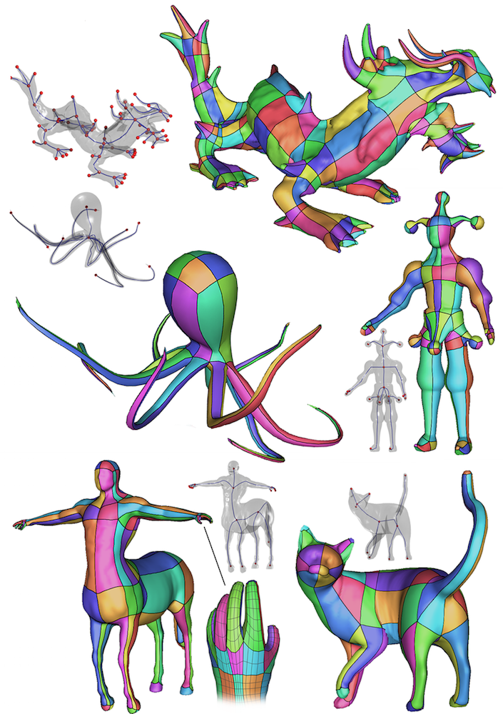

Extraction of the Quad Layout of a Triangle Mesh
Guided by its Curve-Skeleton
Francesco Usai, Marco Livesu, Enrico Puppo, Marco Tarini, Riccardo Scateni
ACM Transactions on Graphics 35(1), 1-13, 2015

ABSTRACT
Starting from the triangle mesh of a digital shape, that is, mainly an articulated
object, we produce a coarse quad layout that can be used in character modeling and
animation. Our quad layout follows the intrinsic object struc- ture described by
its curve skeleton; it contains few irregular vertices of low degree; it can be
immediately refined into a semiregular quad mesh; it provides a structured domain
for UV mapping and parametrization. Our method is fast, one-click, and does not
require any parameter setting. The user can steer and refine the process through
simple interactive tools during the construction of the quad layout.
(*) Here you can find an extension of this algorithm to hexahedral meshing!
(**) Some of the curve-skeletons used for this project were manually edited using this tool
(*) Here you can find an extension of this algorithm to hexahedral meshing!
(**) Some of the curve-skeletons used for this project were manually edited using this tool

DOWNLOADS


(surface approach)
(volumetric extension)
BibTex
@article{ULPTS15,
author = {Usai, Francesco and Livesu, Marco and Puppo, Enrico and Tarini, Marco and Scateni, Riccardo},
title = {Extraction of the Quad Layout of a Triangle Mesh Guided by Its Curve Skeleton},
journal = {ACM Transactions on Graphics},
volume = {35},
number = {1},
year = {2015},
pages = {6:1--6:13},
issn = {0730-0301},
doi = {10.1145/2809785}}
@article{LMPS16,
author = {Livesu, Marco and Muntoni, Alessandro and Puppo, Enrico and Scateni, Riccardo},
title = {Skeleton-driven Adaptive Hexahedral Meshing of Tubular Shapes},
journal = {Computer Graphics Forum},
volume = {35},
number = {7},
pages = {237--246},
year = {2016},
doi = {10.1111/cgf.13021}}